Surface Simplification using Intrinsic Error Metrics
Seminar by Andreas Paul Bruno Lönne (loenne@campus.tu-berlin.de)
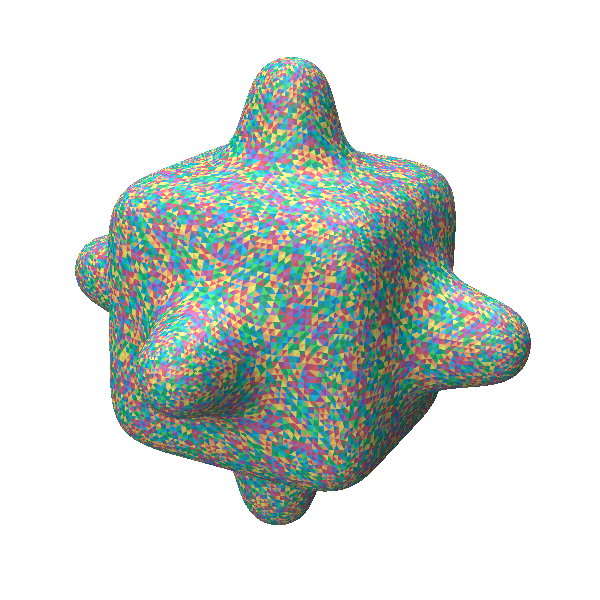
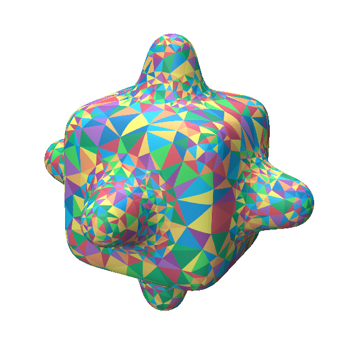
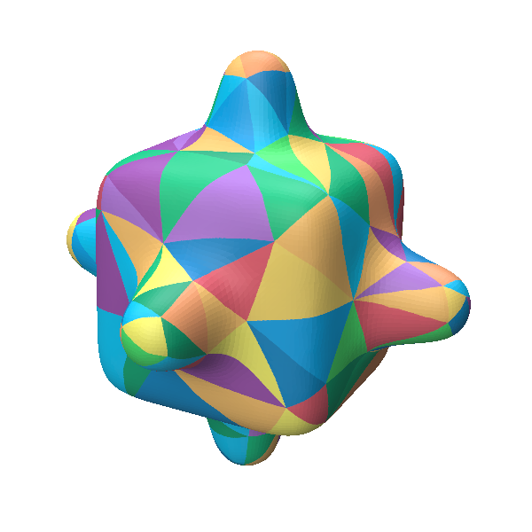
In the regime of geometry processing, solving equations on a surface can become untenably expensive for high-resolution meshes. Hence, it is common practice to instead estimate the result by solving a simplified version of the initial problem. To this end, Liu et al. propose a simplification algorithm that seeks to coarsen the surface of a triangle mesh into progressively less refined intrinsic triangulations while keeping area distortion minimal. [1] These simplified intrinsic surfaces can then be used to approximate the solutions to problems on the original surface. In this documentation, I will give a brief overview of the intrinsic simplification technique and lay out the details and results of my reimplementation.
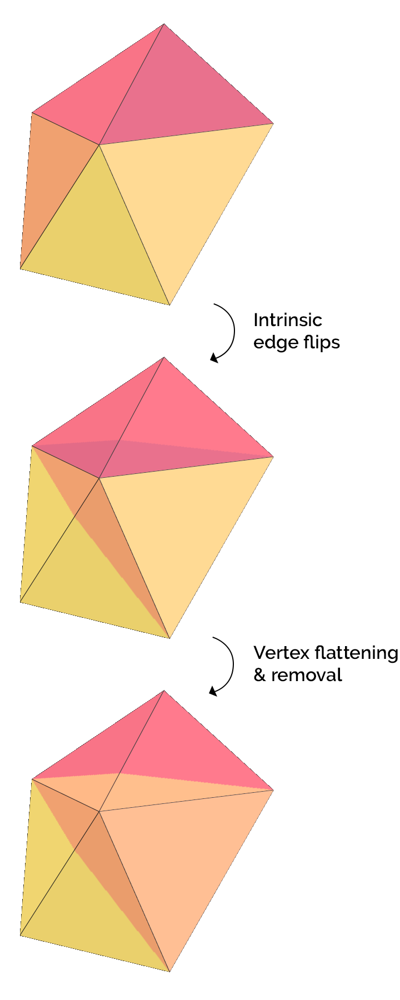
Figure 1: Intrinsic operations
Intrinsic Simplification
Overall, intrinsic simplification is a greedy decimation algorithm that progressively removes vertices from the intrinsic triangulation of the original mesh in order to obtain a simplified version of it. Therein, the intrinsic triangulation is exclusively mutated using the following three operations that are applied over the course of the simplification:
- INTRINSIC EDGE FLIP (Edge flip that preserves geometry. [2])
- VERTEX FLATTENING (Curvature redistribution via intrinsic edge length scaling.)
- VERTEX REMOVAL (Flat vertex removal & remeshing.)
Further, to guide the simplification, Liu et al. propose the intrinsic curvature error metric. This is a quantity defining the cost of a vertex removal based on the transport cost of its Gaussian curvature. In essence, they take the perspective that vertex removal is equivalent to vertex flattening. Meaning that depriving a vertex of its curvature by redistributing it among its neighbors is the same as its removal. For this reason, a vertex's removal is penalized via the optimal transport cost of its curvature to its neighbors. And each simplification step hence removes a vertex of least cost. However, a more detailed description can be found in the original paper. [1]
Implementation
My implementation is written in C++ and can be found under https://github.com/Brunololos/cgs-intrinsic-simplification.
It uses polyscope to realize the user interface and leans on geometry-central and Eigen for various utilities.
It implements the intrinsic simplification method and also solves an exemplary heat diffusion problem on the simplified triangulation.
The results are then visualized on the surface of the fine mesh using texture mapping.
All examples have been run on a desktop PC using an Intel® Core™ i5-12600K CPU and 31.8 GB of memory.
As a distinguishing feature to the official implementation, mine aims to visualize the entire course of the simplification.
Whereas the former expects a target number of remaining vertices as an argument, the latter simplifies until failure and allows the user
to step through the simplification by means of the user interface.
To this end, care was taken to embed all necessary mapping information directly into the simplification operations contained in the simplification record.
This allows the computation of the simplification map without having to store or recover the intrinsic triangulation for each intermediate simplification state.
And as such, the program solely has to recover the intrinsics when they are needed for solving a problem on a specific simplification state (e.g., building the Laplacian for heat diffusion).
Intrinsic Simplification
The simplification itself is mostly conducted analogous to Liu et al. and solely relies on the intrinsic curvature error metric
to drive simplification.
However, noteworthy deviations include:
- Boundary simplification is not supported. (Meshes with a boundary can be simplified, but only interior vertices are removed, as is evident in figure 2.)
- When failing to flip a vertex to degree 3, edge flips performed as part of the same subroutine are not reverted. (The intrinsic simplification remains valid but builds up superfluous edge flips.)
- When encountering triangle inequality violations after vertex flattening, Liu et al. suggest resolving this matter by attempting to flip back into a valid constellation via intrinsic edge flips. However, the present implementation forgoes this step and continues by considering the vertex flattening to have failed. (This can incur higher distortions in the simplification mapping as the next least distorting vertex has to be removed instead.)
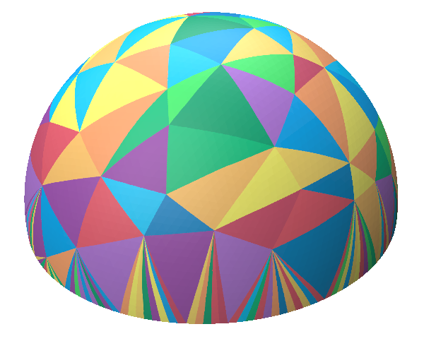
Figure 2: half_sphere mesh simplified to 210 vertices. (In later simplification stages, elongated triangles emanate from the boundary due to missing boundary simplification.)
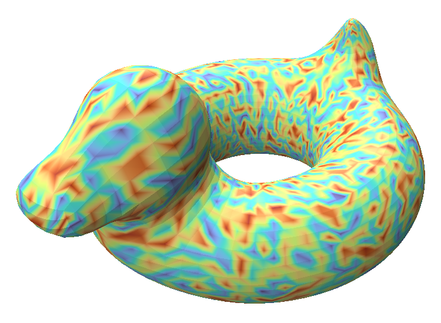
.png)
(a) 16.03s for 5344 vertices
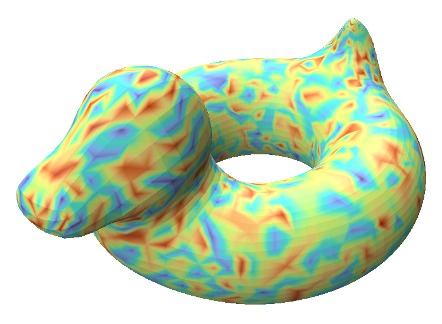
.png)
(b) 0.93s for 2500 vertices
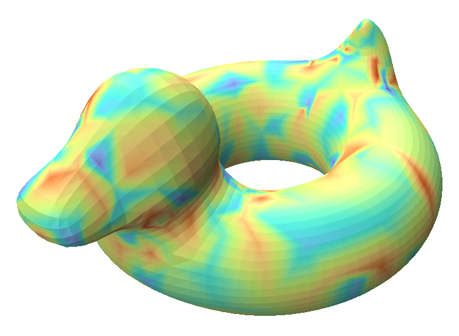
.png)
(c) 0.01s for 500 vertices
Figure 3: Heat diffusion on simplified intrinsics with
2 Newton steps & step size 0.001.
Redistributed initial
heat (left), diffused heat (right).
Heat diffusion
When it comes to heat diffusion, the implementation employs a Cholesky solver to compute implicit Newton steps using the cotangent discretization of the Laplace-Beltrami operator. With the goal of maintaining consistent initial conditions for the diffusion throughout the simplification, the initial heat is sampled randomly from a uniform distribution before simplification and is redistributed with each vertex removal in the following way:
\[h_n'=w_nh_v+(1-w_n)h_n \hspace{4mm}\text{with}\hspace{4mm} n\in N(v)\]
where \(v\) is the removed vertex, \(N(i)\) is the neighborhood of \(i\), \(h_i\) is the current heat at \(i\), \(h_i'\) is the next heat at \(i\), and \(w_i=\delta_{m_i}/m_i'\) is the weighting factor computed for \(i\) from its change in circumcentric dual mass \(\delta_{m_i}\) and its circumcentric dual mass \(m_i'\) after the vertex removal.
Core to this computation is the notion that each vertex's heat value is a representative discretization for the continuous heat field inside that vertex's circumcentric dual cell. But since during vertex removal, the removed vertex's circumcentric dual cell is implicitly partitioned and redistributed to its neighbors, the heat values have to be adapted in order to remain representative. And thus, by making the assumption that heat values are constant in each circumcentric dual cell, heat values are combined linearly, weighted by their corresponding areas.
Texturing & Snapshots
Before simplification, each texture pixel that lies within the UV projection of a face of the input mesh is registered
as a barycentric coordinate at that face.
During the simplification, these points are updated step by step
as the simplification mapping is created so that they can be used for texturing.
Then, after the conclusion of the simplification, the texture pixels can be colored, depending on what face
in the coarse triangulation their corresponding barycentric counterpart was mapped to.
For the triangulation texture, the color is assigned depending on a coloring of the coarsened faces.
(Colorings are computed and stored after each vertex removal.
For more fine-grained simplification states, the colorings are computed on demand.)
And for the heat texture, a barycentric point's heat is calculated through barycentric interpolation
of the diffused heat. This heat in turn is mapped to a color with a color mapping.
Moreover, to improve the responsiveness of the viewer, the application periodically takes snapshots
of the barycentric points throughout the mapping.
The simplification mapping can then be replayed from the latest snapshot instance instead of the initial state.
In this way, snapshots trade off memory usage for viewer fluidity.
Since snapshots can take up large amounts of memory,
the program offers startup options to adjust the snapshot frequency and resolution of the rendered texture.
Results
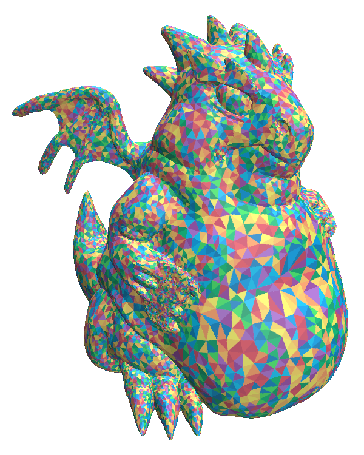
(a) 15746 vertices
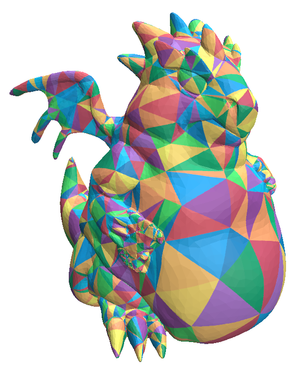
(c) 1000 vertices
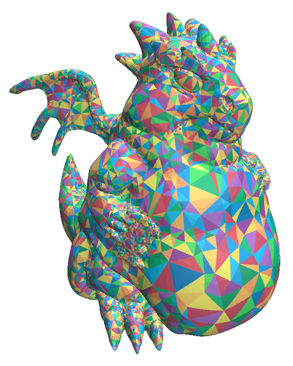
(b) 7500 vertices
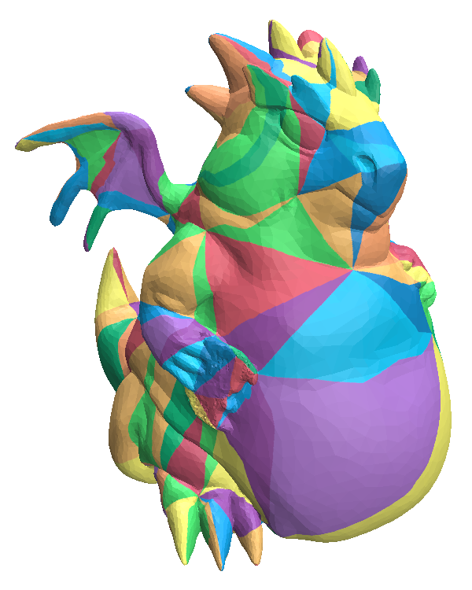
(d) 100 vertices
Figure 4: Simplification of high resolution dragon with 15746 vertices
All things considered, my reimplementation provides a multiresolution visualization of intrinsic simplification,
is able to reduce most meshes down to only a few vertices and can even handle high-resolution meshes.
However, especially on heavily simplified triangulations and those that contain highly degenerate triangles numerical issues arise. [fig. 4.d]
Barycentric coordinates of surface points mapped through the simplification map cease being partitions of unity
and intrinsic edge-lengths begin to violate the triangle inequality more and more.
These issues are self-compounding, which leads to higher and higher distortions over the course of the simplification.
In retrospect it also turns out, that making the simplification mapping independently calculable (by embedding intrinsic information directly into
the mapping operations) did not provide a significant performance gain as the intrinsics can be recovered on demand very fast, even for large meshes.
Further Work
Open work includes implementing boundary simplification and the inverse simplification map. Given the implementations numerical problems, it further seems sensible to also focus on improving the robustness of its computations. Computations especially sensitive in this regard are the computation of barycentric coordinates, as well as intrinsic edge flips and vertex flattening. For these operations, checks for degenerate triangles could be performed to better handle those cases. One may also seek to augment the error term by other quantities, such as an area penalty to enforce more uniform triangle size. And finally, it stands to reason that the viewer fluidity would benefit from tracking triangulation colorings with a multiresolution map, analogous to the simplification map.Acknowledgements
I would like to genuinely express my thanks to Ugo Pavo Finnendahl, who lent me his invaluable interest and counsel, and the TU Berlin chair of Computer Graphics for offering the opportunity to take part in this semester's CG Seminar. Lastly, I want to thank you, the reader, who showed interest in this topic and also seminar. For questions and remarks, feel free to contact me at loenne@campus.tu-berlin.de.
References
- [1] Hsueh-Ti Derek Liu, Mark Gillepsie, Benjamin Chislett, Nicholas Sharp, Alec Jacobson, and Keenan Crane. 2023. Surface Simplification using Intrinsic Error Metrics. ACM Trans. Graph. 42, 4 (August 2023), 16 pages. https://doi.org/10.1145/3592403
- [2] Nicholas Sharp, Mark Gillepsie, and Keenan Crane. Geometry processing with intrinsic triangulations. SIGGRAPH '21: ACM SIGGRAPH 2021 Courses. doi: 10.1145/3450508.3464592. URL https://par.nsf.gov/biblio/10313027
- [3] Nicholas Sharp et al. Polyscope, 2019. https://polyscope.run
- [4] Nicholas Sharp, Keenan Crane, et al. Geometrycentral: A modern C++ library of data structures and algorithms for geometry processing. 2019. https://geometry-central.net
- [5] Gaël Guennebaud, Benoît Jacob, et al. Eigen v3. http://eigen.tuxfamily.org